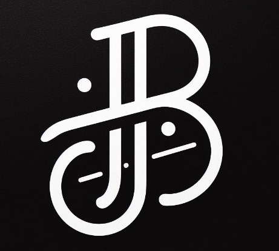

Overview
Purpose
I am here to help solve your problems. Whether you need coding for database management or graphic design and webdevelopment, I bring a myriad of experience with different jobs and projects. If you need to contact me or hire, please reach out to me through my email!
Audience
Potential Employers: I am looking for any future coworkers or employers who check social media to find this website and to find my projects. I hope to use this website to gain real employment in the future. I know that many people check out social media before hiring someone. I would include this link in my LinkedIn to show I can actually code!
Branding
Website Logo
Style Guide
Color Palette
Palette URL:
https://coolors.co/987284-75b9be-d0d6b5-f9b5ac-ee7674| Primary | Secondary | Accent 1 | Accent 2 | |
|---|---|---|---|---|
| #2A9D8F | #103900 | #F5CAC3 | #362C28 | #D4FCC3 |
Typography
Heading Font: Fira Sans(Note: I may change this to a fancier font.)
Paragraph Font: Noto Serif
Introduction
(Said in the future after graduating) I learned coding in a CS major and CE minor at BYU-I Idaho. Basically, I went to college to first learn effective communication in a Comm major and left a coder.
I have what you need
Needs for different programming skills vary based on the software being built or proccesses being managed. I provide above different projects that I have completed including backend projects, graphics, data management using SQL, and logic processes using Python and JavaScript.
Navigation
Site Map
Wireframes
Home

[Projects & images to be used]
Group Work